地政学
ストックホルムは王室、議会、政府、大使館が集まる首都で、バルト海を通じて北欧、EU、NATO、ロシア情勢を意識する街です。中立の記憶と安全保障の現実が同じ水辺に重なります。政策が市民生活にも近い首都都市です。

🇸🇪 スウェーデン / 北ヨーロッパ / World City Atlas
メーラレン湖とバルト海の間に島々が連なり、王室、議会、テック企業、福祉国家の制度、移民地区、音楽とデザイン、寒冷な水辺の暮らしが近い距離で交差する北欧の首都です。
都市の骨格
ストックホルムは、淡水のメーラレン湖とバルト海を分ける水門、橋、島の上に広がります。旧市街、王宮、議会、鉄道駅、港、郊外鉄道、森の住宅地が、水と岩盤の地形に沿って組み合わさる都市です。
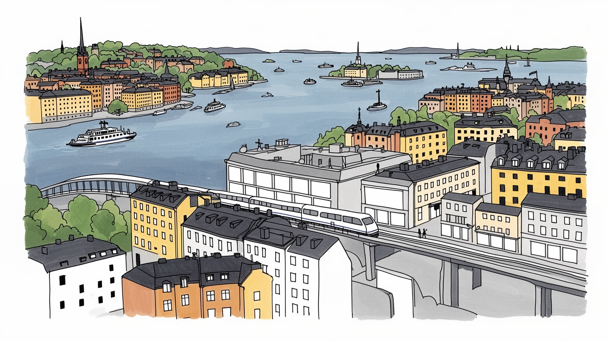
ストックホルムは王室、議会、政府、大使館が集まる首都で、バルト海を通じて北欧、EU、NATO、ロシア情勢を意識する街です。中立の記憶と安全保障の現実が同じ水辺に重なります。政策が市民生活にも近い首都都市です。
行政、金融、ゲーム、音楽配信、通信、ライフサイエンス、大学、観光が雇用を作ります。高度専門職だけでなく、介護、清掃、建設、配送、飲食、交通の労働も福祉都市を支える力です。賃金交渉も日常の基盤です。
ルーテル教会、王室儀礼、世俗的な生活、ムスリム、正教、カトリック、ユダヤ系の信仰が共存します。デザイン、文学、映画、ポップ音楽は、簡素さと国際性を街の文化に刻みます。Nobel行事、Midsommar、サッカーとホッケーも響きます。
水辺の散歩、群島航路、美術館、森、地下鉄、冬の暗さ、夏の長い夕方が暮らしと旅を結びます。一方で住宅不足、郊外格差、移民統合、治安不安、気候適応は重い課題です。美しい首都の緊張も日々身近です。夜もです。
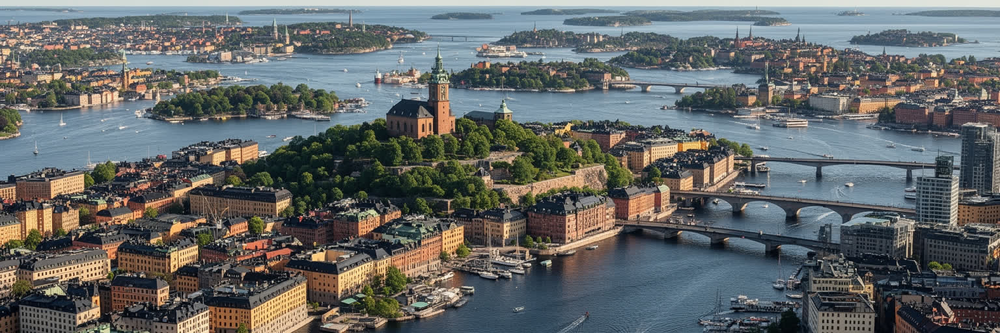
ストックホルムは、メーラレン湖の出口とバルト海の入り江が出会う場所に築かれた都市です。ガムラスタン、リッダーホルメン、セーデルマルム、ユールゴーデン、クングスホルメンなどの島が橋と水路でつながり、中心部の移動は常に水面を横切る感覚を伴います。淡水と海水を分ける水門は、港、洪水管理、船の通行、都市の象徴を同時に担ってきました。さらに外側には数万の島や岩礁からなる群島が広がり、フェリー、夏の別荘、軍事的な防衛線、自然保護、観光が一続きの水域を作ります。岩盤が近い地形は地下鉄やトンネル建設を助けた一方、平地の不足は住宅地を水辺と丘に分散させました。冬は氷と暗さが移動を変え、夏は長い日照が桟橋、公園、船着き場を生活の中心へ押し出します。ストックホルムの美しさは絵葉書の水面だけでなく、橋の混雑、港湾の管理、浄水、下水、雪、凍結、島ごとの階層差にも現れます。水は都市を開放的に見せますが、同時に土地を分け、交通費と住宅価格の差を作ります。新しい住宅やオフィスも、駅と橋の位置、水辺の規制、自然保護の境界に左右されます。朝の通勤船、夜の橋、凍った岸辺は、地形が生活時間を細かく支配していることを教えます。都市を読むには、中心の旧市街、郊外鉄道の先、群島の小島、夏の桟橋の魚の匂いまでを一枚の地図として見る必要があります。
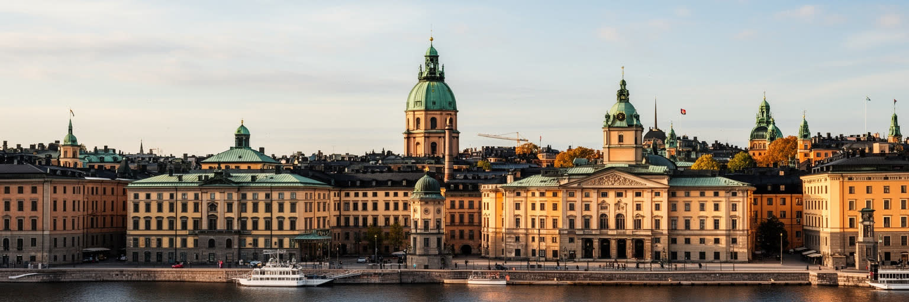
ストックホルムはスウェーデンの首都として、王宮、国会、政府機関、最高裁、中央銀行、大使館、SVTや新聞を含む報道機関が集中します。旧市街の王宮と国会議事堂は水路を挟んで近く、君主制の儀礼と議会民主主義の実務が、観光客の歩く街路のすぐそばで続いています。スウェーデンは長く軍事非同盟を掲げてきましたが、バルト海の安全保障環境、ロシアの脅威認識、EUとNATOへの関与は、首都の外交的な意味を変えました。ストックホルムでは、中立の記憶、福祉国家の自画像、防衛産業、難民受け入れ、気候外交、北極圏への関心が同じ政策空間で議論されます。首都機能は巨大な権力の威容としてよりも、比較的歩ける中心部、公共交通で通える官庁、開かれた広場、市民デモ、記者会見、王室行事、Nobel週間の街の高揚として現れます。小国の首都であるため、政府、自治体、大学、企業、市民団体の距離が近く、政策の変化が住宅、学校、交通、移民支援、警察運用に素早く響きます。国家への信頼が高いとされる社会でも、税負担、福祉の待機、治安、移民政策をめぐる意見は割れます。外交都市としては、平和仲介、人権、環境政策の言葉を発しながら、防衛協力や武器産業との距離も問われます。首都の品位は、穏やかな街並みだけでなく、難しい矛盾を公開の場で扱えるかにかかります。ストックホルムの首都性は、合意を誇るだけでなく、合意がどこで作られ、どこで壊れかけるのかを見せる場所でもあります。
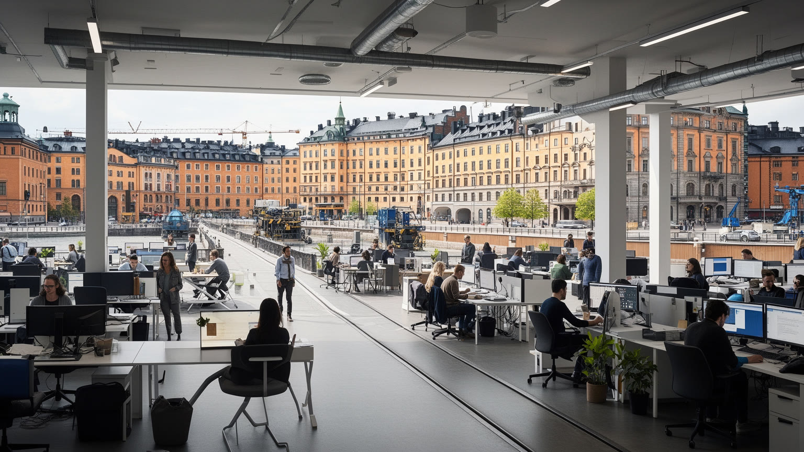
ストックホルムは、人口規模に比べて国際的なテック企業やスタートアップを多く生んできた都市です。通信、ゲーム、音楽配信、フィンテック、電子商取引、医療技術、気候関連技術が集まり、KTHやストックホルム大学、投資家、英語で働く職場、公共サービスのデジタル化が人材を引き寄せます。国内市場が大きくないため、企業は初期から海外展開を前提に設計されやすく、北欧の高い教育水準と社会的な安全網は、転職や起業のリスクを少し下げる役割を持ちます。一方で、成功した産業は都市の家賃を押し上げ、国際専門職と地元の若者、サービス労働者との生活条件の差を広げます。オフィスで働くプログラマーやデザイナーの背後には、清掃、警備、配達、飲食、保育、交通、データセンター、建設の仕事があります。テックの自由な文化は、長時間労働、短期契約、株式報酬の偏り、英語化による排除を見えにくくすることもあります。ストックホルムの技術都市としての力は、単に新しい企業名にあるのではなく、福祉制度、教育、労働市場、都市の暮らしやすさが、革新を支える基盤として機能している点にあります。大学と企業の距離が近いこと、公共部門が新しいサービスの試験場になることも強みです。その基盤が住宅費や格差で弱まれば、創造性も持続しにくくなります。成功の物語を読む時ほど、誰がその都市に住み続けられるのかを問う必要があります。
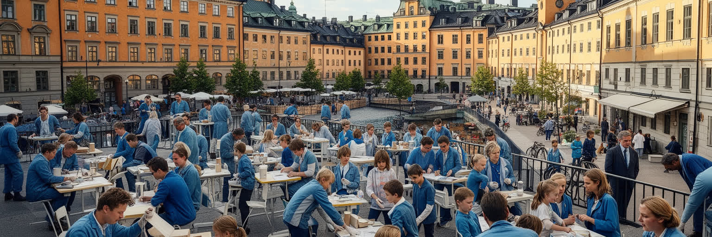
ストックホルムの暮らしは、北欧福祉国家の制度を具体的に経験する場です。保育、学校、医療、介護、育児休業、失業支援、公共交通、図書館、公園は、生活を個人の所得だけに任せない都市基盤として機能します。高い税と労働組合、集団交渉、公共部門の雇用は、平等を支える仕組みであると同時に、制度を維持するための強い就労参加を求めます。行政、大学、病院、テック、金融には高技能の職が多い一方、介護、清掃、飲食、建設、配送、交通、ホテルの仕事も都市を毎日動かします。福祉国家は窓口で受け取るサービスだけではなく、そのサービスを届ける職員の労働条件によって信頼されます。人手不足、待機時間、民営化、移民労働者の低賃金、言語の壁が広がれば、平等な制度にも隙間ができます。ストックホルムでは、豊かさを平均所得だけでなく、子どもを育てる時、病気になる時、高齢期を迎える時、仕事を失う時に都市がどこまで支えるかで測る必要があります。保育園の空き、病院の予約、介護職の賃金、夜勤の疲労は、福祉の評価を左右する細部です。支援の質も問われます。福祉の安心は自動的に続くものではなく、納税への合意、働く人への尊重、地域ごとのサービス格差を縮める努力によって維持されます。制度を誇る都市ほど、その裏側で疲弊する現場を見落としてはなりません。
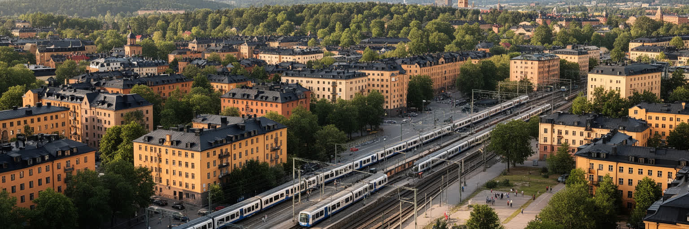
ストックホルムで暮らす難しさの中心には住宅があります。水辺と歴史地区の魅力、成長する雇用、学生と国際人材の流入、建設費の高さ、賃貸制度の待機、所有住宅価格の上昇が重なり、若者や移民家族、単身者、公共部門の働き手に重い負担をかけています。中心部の石造住宅や水辺の再開発地は人気が高く、広い住まいを求める人は地下鉄や近郊鉄道の先へ移ります。郊外には計画的な団地、森に近い住宅地、移民の商店街、学校、スポーツ施設があり、中心とは異なる日常の密度を持ちます。しかし、雇用、教育、交通、治安、所得、差別が重なると、郊外は単なる住みやすい選択肢ではなく、社会的な分断の地図にもなります。ストックホルムの住宅政策を読むには、美しい中心部と荒れた郊外という単純な対比では足りません。郊外は多くの住民にとって家族、信仰、起業、若者文化の拠点であり、同時に公共投資の不足や外部からの偏見にさらされる場所です。住宅の不足は通勤時間を伸ばし、学校選択を変え、地域のつながりを弱めます。短期の部屋を転々とする若者や学生は、仕事や学びを始める前に生活の安定を失います。福祉国家の平等は、誰が水辺の近くに住めるかだけでなく、郊外の学校、駅前、図書館、公園、医療へのアクセスがどれだけ整っているかで試されます。都市の魅力は、住める範囲の広さで測られます。
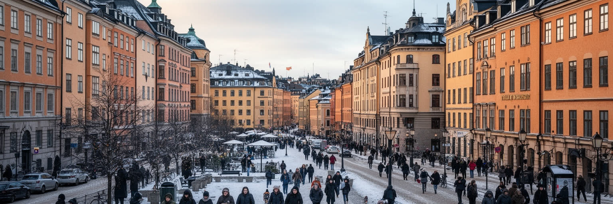
ストックホルムは、スウェーデンの移民受け入れと統合をめぐる議論が集中する都市です。フィンランド系、バルカン系、中東系、アフリカ系、イラン系、チリ系、ソマリア系、シリア系、近年のEU内移動者や国際専門職が、街の労働、食、信仰、言語、教育を広げてきました。移民の住民は介護、清掃、交通、建設、飲食、配送、医療、研究、起業、文化産業で働き、都市の便利さと多様性を支えています。一方で、住宅分離、学校の成績差、就職差別、言語教育、ギャング犯罪への不安、警察への信頼、難民政策の変化は、政治の大きな争点です。福祉国家が普遍的であるほど、実際に制度へアクセスしにくい人がどこにいるのかを細かく見る必要があります。移民地区を治安問題だけで語れば、そこにある家庭、商店、礼拝、学習、若者の希望を消してしまいます。逆に多文化を食や祭りだけで祝えば、差別や貧困を見落とします。学校の廊下、駅前の店、AIK、Hammarby、Djurgardenを語るサッカー場、礼拝所は、異なる背景の住民が出会う重要な公共圏です。ストックホルムの移民政治は、誰を市民として支えるのか、どの言語で公共サービスを届けるのか、若者が将来を持てる学校と職場をどう作るのかという問いです。統合は移民だけの責任ではなく、行政、企業、学校、近隣、メディアが偏見と格差を扱う制度を持てるかにかかっています。首都の平等は、郊外の駅前で日々試されています。
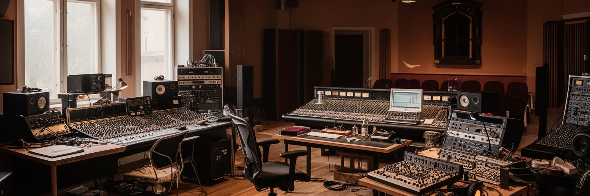
ストックホルムの文化的な影響力は、巨大な人口よりも、デザイン、音楽、映像、出版、ゲーム、ファッションが作る密度にあります。北欧デザインは、装飾の多さよりも素材、光、機能、日常の使いやすさを重視し、家具、照明、住宅、駅、学校、図書館、公共空間にまで広がっています。長い冬と室内で過ごす時間は、光や温かさへの感覚を洗練させ、簡素な形に生活の快適さを込める文化を育てました。買い物の場でも、家具店、古着店、食品市場にその感覚が残ります。音楽では、ポップ、電子音楽、プロデューサー、作曲家、配信産業が国際的な存在感を持ち、英語で世界市場へ出る創作の環境が整っています。ゲームや映像も、物語、技術、デザインを結び、若い人材を集めます。ただし、文化産業の輝きは、スタジオや広告代理店だけで成り立つわけではありません。ABBA以来のポップの記憶、練習場所、音楽教育、クラブ、移民地区の音、公共助成、小さな会場、夜の交通、低い家賃があって初めて新しい表現は育ちます。美術館、工芸学校、図書館、公共放送も、商業だけでは残りにくい試みを支える装置です。場の維持も課題です。住宅費が上がり、中心部の余白が減れば、創造の入口は狭くなります。ストックホルムのデザインと音楽を読むことは、美しい商品や世界的な曲の背後にある教育、福祉、労働、移民文化、都市の余白を読むことです。洗練された静けさと若者の音は、同じ都市の別の顔です。
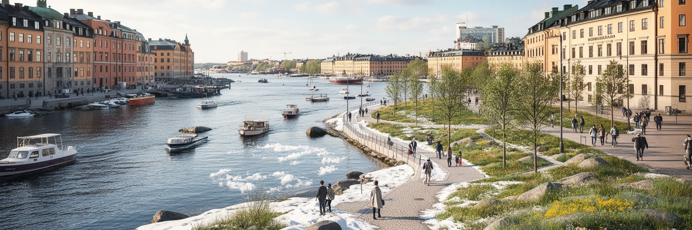
ストックホルムの気候は、都市の生活リズムを強く形作ります。冬は日照が短く、雪、氷、湿った寒さ、暗い通勤時間が続いています。公共交通、除雪、断熱、暖房、室内の集まる場所、照明、学校や職場の時間設計は、寒冷地の都市基盤として欠かせません。夏は一転して日が長く、水辺、桟橋、公園、群島航路、屋外カフェが生活の中心になり、住民と観光客が短い季節を濃く使います。水質改善により泳げる場所が増えたことは、環境政策と暮らしが結びついた例です。一方で気候変動は、穏やかな北欧のイメージを揺さぶります。豪雨、熱波、海面上昇、バルト海の水質、雪の減少、氷の安全性、森林火災の煙、古い建物の湿気と断熱が課題になります。暑さに弱い住宅や高齢者、低所得者、屋外労働者への対応も重要です。環境都市としての評価は、再生可能エネルギーや公共交通の数字だけでは足りません。気候対策の費用を誰が負担し、涼しい場所や断熱された住まいを誰が使えるのかを見る必要があります。冬の暗さは心身の健康にも関わり、地域の集会所や図書館、スポーツ施設の役割を大きくします。ストックホルムの水辺は魅力であると同時に、防災、健康、交通、観光、自然保護が交差する公共の資産です。暗い冬を支える制度と、明るい夏を共有する公平性が、この都市の気候文化を作っています。
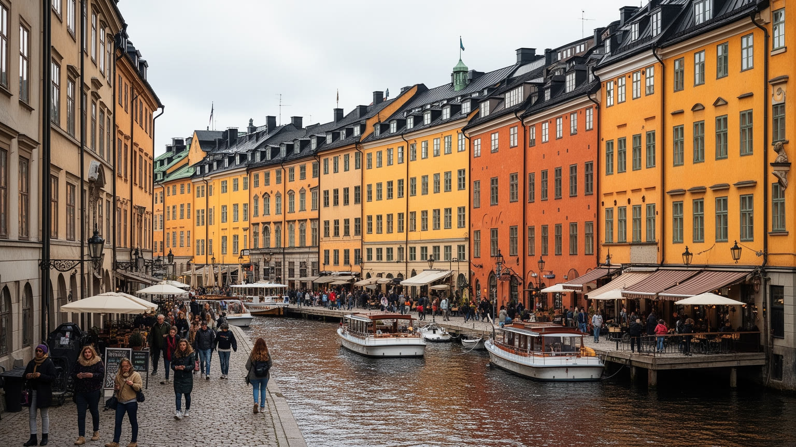
ストックホルム観光は、ガムラスタンの石畳、王宮、大聖堂、ノーベル賞の記憶、ユールゴーデンの美術館群、ヴァーサ号博物館、近現代美術、地下鉄駅のアート、Ostermalm市場、群島への船旅を通じて、歴史と水辺を結びます。旧市街は中世以来の交易、王権、宗教、都市自治の痕跡を残し、狭い路地と広場が首都の始まりを見せます。ヴァーサ号は軍事と海洋技術の失敗を、保存された船体として都市の記憶に変えています。観光の魅力は名所が水路と公共交通でつながり、歩きながら歴史、自然、現代文化を切り替えられる点にあります。しかし、観光は宿泊、清掃、飲食、交通、ガイド、博物館職員、警備、船員の労働で成り立ち、夏の集中は混雑と価格上昇を生み、船の汽笛、地下鉄の音、カフェの匂いも観光の記憶になります。旧市街が土産物と短期滞在に偏れば、住民の日常は薄くなります。クルーズ船や週末旅行者の動きは、港と中心部の負担を短い時間に集中させます。住民の視点も必要です。ストックホルムの遺産を読むには、王室や美術館だけでなく、労働運動、福祉国家の形成、移民の商店街、郊外の現代建築、サーミやバルト海地域との関係にも目を向ける必要があります。旅の動線を中心部から群島、地下鉄沿線、郊外の広場へ広げると、首都は美しい旧市街だけではなく、多層の社会史を持つ都市として見えてきます。水辺を楽しむことは、その記憶の広がりへ入る入口です。
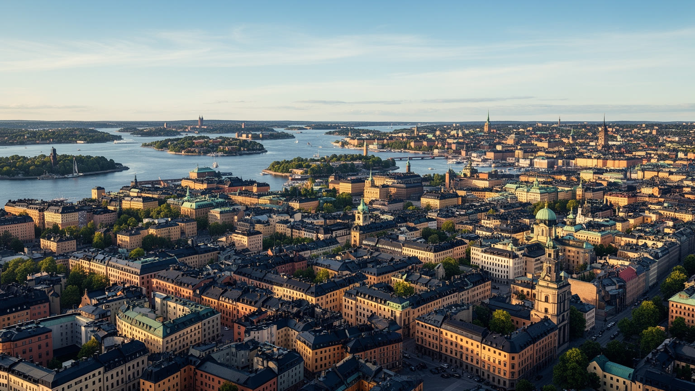
ストックホルムは、透明な水面、整った公共空間、デザイン、福祉国家、テック産業によって、穏やかで豊かな北欧首都として記憶されやすい街です。その印象は重要ですが、それだけでは都市の全体像を捉えられません。王室と議会、バルト海の安全保障、移民と郊外の格差、住宅不足、福祉現場の人手不足、起業都市の家賃上昇、冬の暗さ、夏の観光集中、気候変動への適応が同じ都市の内部にあります。島と橋が作る美しい景観は、交通と土地の制約も生みます。高度な公共サービスは、納税への合意と現場労働に依存します。音楽やテックの国際性は、教育と福祉に支えられますが、成功が居住費を上げれば創造の余地を狭めます。移民地区は問題としてだけでなく、労働、信仰、食、若者文化、起業の場所として読む必要があります。観光客が見る水辺と、住民が探す部屋、介護職が向かう夜勤、若者が使う郊外駅は、同じ都市の異なる入口です。ストックホルムを総合的に見るには、ガムラスタン、王宮、ノルマルムのオフィス、セーデルマルムの文化、郊外団地、大学、港、群島、地下鉄の駅、スタジアム、市場を同じ地図に置くことが大切です。美しさの奥にある制度と矛盾を見れば、この都市は完成された理想郷ではなく、平等、環境、成長、多様性を毎日調整する実験場として立ち上がります。その調整を続けられるかが、水辺の首都の未来を決めます。